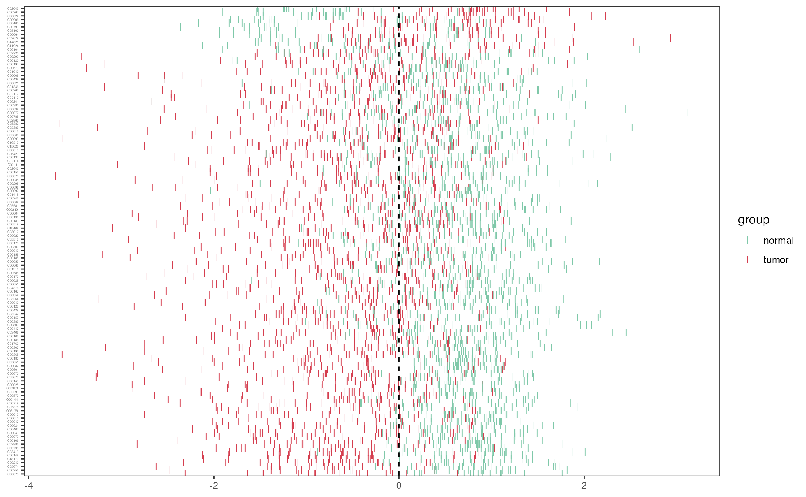

Metabolite compound name transformation
Metabolite compound name transform to RefMet name
This step requires networking
RefMet: A Reference list of Metabolite names.The main objective of RefMet is to provide a standardized reference nomenclature for both discrete metabolite structures and metabolite species identified by spectroscopic techniques in metabolomics experiments.
| Input_name | Refmet_name | Formula | Super_class | Main_class | Sub_class |
|---|---|---|---|---|---|
| 2-Hydroxybutyric acid | 2-Hydroxybutyric acid | C4H8O3 | Fatty Acyls | Fatty acids | Hydroxy FA |
| 1-Methyladenosine | 1-Methyladenosine | C11H15N5O4 | Nucleic acids | Purines | Purine ribonucleosides |
| tt | tt | - | - | - | - |
| 2-Aminooctanoic acid | 2-Aminocaprylic acid | C8H17NO2 | Fatty Acyls | Fatty acids | Amino FA |
Metabolite compound name transform to KEGG ID
This step requires networking
Transform the metabolites compound name to KEGG ID
| Name | KEGG_id |
|---|---|
| 2-Hydroxybutyric acid | C05984 |
| 1-Methyladenosine | C02494 |
| tt | NA |
| 2-Aminooctanoic acid | NA |
Metabolite name corresponding to kegg pathway
This step requires networking
Search the kegg pathway corresponding to the metabolite name
## Start at 2024-10-31 12:54:28.533587## ##
## ######################################################### 'xEnricher' is being called (2024-10-31 12:54:28.539337):## ######################################################### First, generate a subgraph induced (via 'all_paths' mode) by the annotation data (2024-10-31 12:54:28.548193) ...## Next, prepare enrichment analysis (2024-10-31 12:54:28.567914) ...## There are 1 genes/SNPs of interest tested against 3043 genes/SNPs as the background (annotatable only? TRUE) (2024-10-31 12:54:28.569467)## Third, perform enrichment analysis using 'hypergeo' test (2024-10-31 12:54:28.574179) ...## There are 81 terms being used, each restricted within [1,2000] annotations## Last, adjust the p-values for 81 terms (with 0 minimum overlaps) using the BH method (2024-10-31 12:54:28.604333) ...## ######################################################### 'xEnricher' has been finished (2024-10-31 12:54:28.663996)!## #########################################################
## End at 2024-10-31 12:54:28.665875## Runtime in total (xEnricherYours): 0 secs| Name | KEGG_id | Pathway | Pathway_category | Pathway_id |
|---|---|---|---|---|
| 2-Hydroxybutyric acid | C05984 | Propanoate metabolism | Carbohydrate metabolism | hsa00640 |
| Name | KEGG_id |
|---|---|
| 2-Hydroxybutyric acid | C05984 |
| 1-Methyladenosine | C02494 |
| tt | NA |
| 2-Aminooctanoic acid | NA |
Metabolite KEGG ID transform to KEGG pathway
KEGG ID transform to KEGG pathway
keggid <- c("C05984","C02494")
##### the output is the each metabolite related pathway
keggpathway_result <- keggid2pathway(keggid)
kable(head(keggpathway_result))| ENTRY | NAME | PATHWAY | pathway_type | V2 |
|---|---|---|---|---|
| C05984 | 2-Hydroxybutanoic acid;///2-Hydroxybutyrate;///2-Hydroxybutyric acid | Propanoate metabolism | Carbohydrate metabolism | hsa00640 |
Pathway information
Get the gene and the metabolite in the pathway
## the genes and metabolites in pathway 'hsa00630'
result <- pathwayinfo("hsa00630")
## the genes and metabolites in pathway 'Glyoxylate and dicarboxylate metabolism'
result <- pathwayinfo("Glyoxylate and dicarboxylate metabolism")
kable(head(result$gene_info[1:2,]))| type | name | kegg_pathwayid | kegg_pathwayname | kegg_category |
|---|---|---|---|---|
| gene | ACSS1 | hsa00630 | Glyoxylate and dicarboxylate metabolism | Carbohydrate metabolism |
| gene | ACSS2 | hsa00630 | Glyoxylate and dicarboxylate metabolism | Carbohydrate metabolism |
kable(head(result$compound_info[1:2,]))| type | name | kegg_pathwayid | kegg_pathwayname | kegg_category |
|---|---|---|---|---|
| metabolite | C00007 | hsa00630 | Glyoxylate and dicarboxylate metabolism | Carbohydrate metabolism |
| metabolite | C00011 | hsa00630 | Glyoxylate and dicarboxylate metabolism | Carbohydrate metabolism |
Pathway name transform to pathway id
Transform the KEGG pathway name to KEGG pathway ID
## the KEGG pathway ID of pathway name
pathwayid <- pathway2pathwayid("Glycolysis / Gluconeogenesis")
kable(head(pathwayid))| PATHWAY | pathwayid |
|---|---|
| Glycolysis / Gluconeogenesis | hsa00010 |
Group-wise analyses

Differnetial metabolite analysis
Function ‘mlimma’
## mlimma is the function of Differential Metabolite analysis by limma
diff_result <- mlimma(meta_dat,group)Function ‘DM’
## DM is the function of Differential Metabolite analysis by OPLS-DA
diff_result <- DM(2**meta_dat,group)## OPLS-DA
## 31 samples x 219 variables and 1 response
## standard scaling of predictors and response(s)
## R2X(cum) R2Y(cum) Q2(cum) RMSEE pre ort pR2Y pQ2
## Total 0.485 0.864 0.697 0.194 1 1 0.05 0.05
kable(head(diff_result))| Name | Fold_change | PValue_t | Padj_t | PValue_wilcox | Padj_wilcox | VIP |
|---|---|---|---|---|---|---|
| C09642 | 0.8423768 | 0.1684116 | 0.2208512 | 0.1726519 | 0.2237323 | 0.5200893 |
| C05581 | 0.4022011 | 0.0007930 | 0.0022037 | 0.0019158 | 0.0049360 | 1.1231315 |
| C03264 | 0.4340267 | 0.0000617 | 0.0003379 | 0.0001874 | 0.0008550 | 1.3302580 |
| C15025 | 0.6827449 | 0.0026618 | 0.0061363 | 0.0076265 | 0.0165367 | 0.9948296 |
| C00408 | 1.6261110 | 0.0068829 | 0.0142203 | 0.0186756 | 0.0358768 | 1.0288242 |
| C02918 | 0.4974168 | 0.6768913 | 0.7338574 | 0.0855255 | 0.1248672 | 0.0628253 |
## filter the differential metabolites by default fold change >1.3 or < 1/1.3 ,fdr < 0.05 and VIP>0.8
diff_result_filter <- diff_result %>%
filter(Fold_change >1.3 | Fold_change < 1/1.3) %>%
filter(Padj_wilcox < 0.1) %>%
filter(VIP>0.8)
kable(head(diff_result_filter))| Name | Fold_change | PValue_t | Padj_t | PValue_wilcox | Padj_wilcox | VIP |
|---|---|---|---|---|---|---|
| C05581 | 0.4022011 | 0.0007930 | 0.0022037 | 0.0019158 | 0.0049360 | 1.1231315 |
| C03264 | 0.4340267 | 0.0000617 | 0.0003379 | 0.0001874 | 0.0008550 | 1.3302580 |
| C15025 | 0.6827449 | 0.0026618 | 0.0061363 | 0.0076265 | 0.0165367 | 0.9948296 |
| C00408 | 1.6261110 | 0.0068829 | 0.0142203 | 0.0186756 | 0.0358768 | 1.0288242 |
| C06178 | 0.3973194 | 0.0000155 | 0.0001212 | 0.0000839 | 0.0005102 | 1.4137612 |
| C02220 | 0.4522355 | 0.0403365 | 0.0630977 | 0.0552213 | 0.0876338 | 0.9827198 |
Differential metabolites’ volcano
Volcano plot of metabolites using the function “pVolcano”
p_volcano <- pVolcano(diff_result,foldchange_threshold=1.5)## [1] 1.5
p_volcano
Differential metabolites’ heatmap
Heatmap plot of differentital metabolites using the function “pHeatmap”
meta_dat_diff <- meta_dat[rownames(meta_dat) %in% diff_result_filter$Name,]
p_heatmap <- pHeatmap(meta_dat_diff,group,fontsize_row=5,fontsize_col=4,clustering_method="ward.D",clustering_distance_cols="correlation")
p_heatmap
Differential metabolites’ zscore
Zscore plot of differentital metabolites using the function “pZscore”
p_zscore <- pZscore(meta_dat_diff,group,ysize=3)
p_zscore
Feature selection
Random Forest
Using machine learning “Random Forest” for feature selection
result_ML_RF <- ML_RF(meta_dat1)
result_ML_RF$p
result_ML_RF$feature_result## # A tibble: 114 × 6
## normal tumor MeanDecreaseAccuracy MeanDecreaseGini names raw
## <dbl> <dbl> <dbl> <dbl> <chr> <fct>
## 1 4.54 4.16 4.73 0.525 C00267 C00267
## 2 4.21 3.68 4.36 0.435 C00022 C00022
## 3 4.24 3.53 4.32 0.503 C00073 C00073
## 4 4.36 3.29 4.30 0.493 C05378 C05378
## 5 4.31 3.65 4.27 0.526 C00148 C00148
## 6 3.85 3.04 4.08 0.449 C05938. C05938
## 7 3.59 3.84 4.01 0.429 C05674 C05674
## 8 3.66 3.95 4.00 0.529 C02045 C02045
## 9 4.06 3.16 3.89 0.505 C02291 C02291
## 10 3.73 3.22 3.72 0.546 C02630 C02630
## # ℹ 104 more rowsXGBoost
Using machine learning ” XGBoost” for feature selection
## [1] train-rmse:0.364289 test-rmse:0.472248
## [2] train-rmse:0.265516 test-rmse:0.429406
## [3] train-rmse:0.193648 test-rmse:0.426044
## [4] train-rmse:0.141421 test-rmse:0.381072
## [5] train-rmse:0.103794 test-rmse:0.350077
## [6] train-rmse:0.076715 test-rmse:0.355183
## [7] train-rmse:0.057393 test-rmse:0.360215
## [8] train-rmse:0.043156 test-rmse:0.347083
## [9] train-rmse:0.032688 test-rmse:0.341209
## [10] train-rmse:0.025033 test-rmse:0.337016
## [11] train-rmse:0.019458 test-rmse:0.335444
## [12] train-rmse:0.015306 test-rmse:0.333113
## [13] train-rmse:0.012178 test-rmse:0.331547
## [14] train-rmse:0.009880 test-rmse:0.331698
## [15] train-rmse:0.008085 test-rmse:0.332141
## [16] train-rmse:0.006654 test-rmse:0.332480
## [17] train-rmse:0.005551 test-rmse:0.332631
## [18] train-rmse:0.004665 test-rmse:0.332850
## [19] train-rmse:0.003930 test-rmse:0.332560
## [20] train-rmse:0.003330 test-rmse:0.332356
## [21] train-rmse:0.002841 test-rmse:0.332294
## [22] train-rmse:0.002419 test-rmse:0.332307
## [23] train-rmse:0.002072 test-rmse:0.332309
## [24] train-rmse:0.001770 test-rmse:0.332341
## [25] train-rmse:0.001524 test-rmse:0.332278
## [26] train-rmse:0.001309 test-rmse:0.332300
## [27] train-rmse:0.001119 test-rmse:0.332257
## [28] train-rmse:0.000980 test-rmse:0.332319
## [29] train-rmse:0.000849 test-rmse:0.332190
## [30] train-rmse:0.000738 test-rmse:0.332188
## [31] train-rmse:0.000646 test-rmse:0.332186
## [32] train-rmse:0.000573 test-rmse:0.332282
## [33] train-rmse:0.000508 test-rmse:0.332277
## [34] train-rmse:0.000447 test-rmse:0.332277
## [35] train-rmse:0.000418 test-rmse:0.332274
## [36] train-rmse:0.000418 test-rmse:0.332274
## [37] train-rmse:0.000418 test-rmse:0.332274
## [38] train-rmse:0.000418 test-rmse:0.332274
## [39] train-rmse:0.000418 test-rmse:0.332274
## [40] train-rmse:0.000418 test-rmse:0.332274
## [41] train-rmse:0.000418 test-rmse:0.332274
## [42] train-rmse:0.000418 test-rmse:0.332274
## [43] train-rmse:0.000418 test-rmse:0.332274
## [44] train-rmse:0.000418 test-rmse:0.332273
## [45] train-rmse:0.000418 test-rmse:0.332273
## [46] train-rmse:0.000418 test-rmse:0.332273
## [47] train-rmse:0.000418 test-rmse:0.332273
## [48] train-rmse:0.000418 test-rmse:0.332273
## [49] train-rmse:0.000418 test-rmse:0.332273
## [50] train-rmse:0.000418 test-rmse:0.332273
## [51] train-rmse:0.000418 test-rmse:0.332273
## [52] train-rmse:0.000418 test-rmse:0.332273
## [53] train-rmse:0.000418 test-rmse:0.332273
## [54] train-rmse:0.000418 test-rmse:0.332273
## [55] train-rmse:0.000418 test-rmse:0.332273
## [56] train-rmse:0.000418 test-rmse:0.332273
## [57] train-rmse:0.000418 test-rmse:0.332273
## [58] train-rmse:0.000418 test-rmse:0.332273
## [59] train-rmse:0.000418 test-rmse:0.332273
## [60] train-rmse:0.000418 test-rmse:0.332273
## [61] train-rmse:0.000418 test-rmse:0.332273
## [62] train-rmse:0.000418 test-rmse:0.332273
## [63] train-rmse:0.000418 test-rmse:0.332273
## [64] train-rmse:0.000418 test-rmse:0.332273
## [65] train-rmse:0.000418 test-rmse:0.332273
## [66] train-rmse:0.000418 test-rmse:0.332273
## [67] train-rmse:0.000418 test-rmse:0.332273
## [68] train-rmse:0.000418 test-rmse:0.332273
## [69] train-rmse:0.000418 test-rmse:0.332273
## [70] train-rmse:0.000418 test-rmse:0.332273

## Feature Gain Cover Frequency Importance
## <fctr> <num> <num> <num> <num>
## 1: C00365 4.088605e-01 0.04187605 0.02941176 4.088605e-01
## 2: C00073 2.171547e-01 0.04187605 0.02941176 2.171547e-01
## 3: C00022 1.403271e-01 0.12562814 0.08823529 1.403271e-01
## 4: C02045 9.207149e-02 0.08375209 0.05882353 9.207149e-02
## 5: C15025 6.095240e-02 0.02177554 0.02941176 6.095240e-02
## 6: C00408 3.186836e-02 0.02177554 0.02941176 3.186836e-02
## 7: C05581 2.159998e-02 0.06532663 0.08823529 2.159998e-02
## 8: C03264 1.478701e-02 0.04690117 0.05882353 1.478701e-02
## 9: C02630 4.483714e-03 0.04187605 0.02941176 4.483714e-03
## 10: C02291 3.784980e-03 0.08375209 0.05882353 3.784980e-03
## 11: C00673 2.112304e-03 0.07035176 0.08823529 2.112304e-03
## 12: C00149 7.211478e-04 0.04187605 0.02941176 7.211478e-04
## 13: C00255 6.422986e-04 0.08375209 0.05882353 6.422986e-04
## 14: C05635 2.121281e-04 0.02512563 0.02941176 2.121281e-04
## 15: C00267 1.730394e-04 0.05025126 0.05882353 1.730394e-04
## 16: C00074 1.567400e-04 0.08040201 0.11764706 1.567400e-04
## 17: C05512 4.794052e-05 0.01842546 0.02941176 4.794052e-05
## 18: C09642 2.385539e-05 0.03350084 0.05882353 2.385539e-05
## 19: C01762 2.036129e-05 0.02177554 0.02941176 2.036129e-05LASSO
Using machine learning “LASSO” for feature selection
## Loading required package: lattice##
## Attaching package: 'lattice'## The following object is masked from 'package:clusterProfiler':
##
## dotplot##
## Attaching package: 'caret'## The following object is masked from 'package:survival':
##
## clusterelastic network
Using machine learning “elastic network” for feature selection
result_ML_elastic <- ML_alpha(meta_dat1,method="elastic")Clinical analysis
Time series of clinical
Column contains the time, group, clinical index(such as ALT), low and high
clinical_index[1:5,]## time group ALT low high
## 1 1 B 13 10 64
## 2 2 B 13 10 64
## 3 3 B 14 10 64
## 4 4 B 24 10 64
## 5 5 B 255 10 64
time_series_ALT <- pCliTS(clinical_index,"ALT")
time_series_ALT## `geom_smooth()` using formula = 'y ~ x'
Cox analysis
result <- MetCox(dat_surv)Session information
## R version 4.3.2 (2023-10-31 ucrt)
## Platform: x86_64-w64-mingw32/x64 (64-bit)
## Running under: Windows 11 x64 (build 22635)
##
## Matrix products: default
##
##
## locale:
## [1] LC_COLLATE=Chinese (Simplified)_China.utf8
## [2] LC_CTYPE=Chinese (Simplified)_China.utf8
## [3] LC_MONETARY=Chinese (Simplified)_China.utf8
## [4] LC_NUMERIC=C
## [5] LC_TIME=Chinese (Simplified)_China.utf8
##
## time zone: Etc/GMT-8
## tzcode source: internal
##
## attached base packages:
## [1] stats4 stats graphics grDevices utils datasets methods
## [8] base
##
## other attached packages:
## [1] caret_6.0-94 lattice_0.22-6 pathview_1.42.0
## [4] org.Hs.eg.db_3.18.0 AnnotationDbi_1.64.1 IRanges_2.36.0
## [7] S4Vectors_0.40.2 Biobase_2.62.0 BiocGenerics_0.48.1
## [10] clusterProfiler_4.10.1 RColorBrewer_1.1-3 ggplot2_3.5.1
## [13] stringr_1.5.1 knitr_1.48 tidyr_1.3.1
## [16] survival_3.7-0 tibble_3.2.1 dplyr_1.1.4
## [19] MNet_1.1.0
##
## loaded via a namespace (and not attached):
## [1] fs_1.6.4 matrixStats_1.4.1
## [3] bitops_1.0-9 enrichplot_1.22.0
## [5] lubridate_1.9.3 HDO.db_0.99.1
## [7] httr_1.4.7 Rgraphviz_2.46.0
## [9] tools_4.3.2 backports_1.5.0
## [11] utf8_1.2.4 R6_2.5.1
## [13] mgcv_1.9-1 lazyeval_0.2.2
## [15] withr_3.0.1 gridExtra_2.3
## [17] cli_3.6.3 textshaping_0.4.0
## [19] scatterpie_0.2.4 labeling_0.4.3
## [21] sass_0.4.9 KEGGgraph_1.62.0
## [23] filesstrings_3.4.0 survMisc_0.5.6
## [25] readr_2.1.5 randomForest_4.7-1.2
## [27] proxy_0.4-27 pkgdown_2.1.1
## [29] systemfonts_1.1.0 yulab.utils_0.1.7
## [31] gson_0.1.0 foreign_0.8-87
## [33] DOSE_3.28.2 DMwR2_0.0.2
## [35] parallelly_1.38.0 limma_3.58.1
## [37] strex_2.0.1 TTR_0.24.4
## [39] rstudioapi_0.17.0 RSQLite_2.3.7
## [41] shape_1.4.6.1 gridGraphics_0.5-1
## [43] generics_0.1.3 car_3.1-3
## [45] GO.db_3.18.0 Matrix_1.6-1.1
## [47] qqman_0.1.9 fansi_1.0.6
## [49] abind_1.4-8 lifecycle_1.0.4
## [51] yaml_2.3.10 carData_3.0-5
## [53] SummarizedExperiment_1.32.0 recipes_1.1.0
## [55] qvalue_2.34.0 SparseArray_1.2.4
## [57] grid_4.3.2 blob_1.2.4
## [59] promises_1.3.0 crayon_1.5.3
## [61] MultiDataSet_1.30.0 cowplot_1.1.3
## [63] KEGGREST_1.42.0 pillar_1.9.0
## [65] fgsea_1.28.0 GenomicRanges_1.54.1
## [67] xgboost_1.7.8.1 future.apply_1.11.2
## [69] codetools_0.2-20 fastmatch_1.1-4
## [71] glue_1.8.0 ggfun_0.1.6
## [73] data.table_1.16.2 MultiAssayExperiment_1.28.0
## [75] treeio_1.26.0 vctrs_0.6.5
## [77] png_0.1-8 gtable_0.3.5
## [79] cachem_1.1.0 dnet_1.1.7
## [81] gower_1.0.1 xfun_0.48
## [83] S4Arrays_1.2.1 mime_0.12
## [85] prodlim_2024.06.25 tidygraph_1.3.1
## [87] timeDate_4041.110 pheatmap_1.0.12
## [89] iterators_1.0.14 KMsurv_0.1-5
## [91] hardhat_1.4.0 lava_1.8.0
## [93] statmod_1.5.0 ipred_0.9-15
## [95] nlme_3.1-166 ggtree_3.10.1
## [97] xts_0.14.1 bit64_4.5.2
## [99] GenomeInfoDb_1.38.8 bslib_0.8.0
## [101] rpart_4.1.23 colorspace_2.1-1
## [103] DBI_1.2.3 Hmisc_5.1-3
## [105] nnet_7.3-19 tidyselect_1.2.1
## [107] bit_4.5.0 compiler_4.3.2
## [109] curl_5.2.3 glmnet_4.1-8
## [111] graph_1.80.0 htmlTable_2.4.3
## [113] desc_1.4.3 DelayedArray_0.28.0
## [115] shadowtext_0.1.4 checkmate_2.3.2
## [117] scales_1.3.0 hexbin_1.28.4
## [119] supraHex_1.40.0 digest_0.6.37
## [121] rmarkdown_2.28 XVector_0.42.0
## [123] htmltools_0.5.8.1 pkgconfig_2.0.3
## [125] base64enc_0.1-3 MatrixGenerics_1.14.0
## [127] highr_0.11 fastmap_1.2.0
## [129] rlang_1.1.4 htmlwidgets_1.6.4
## [131] quantmod_0.4.26 shiny_1.9.1
## [133] farver_2.1.2 jquerylib_0.1.4
## [135] zoo_1.8-12 jsonlite_1.8.9
## [137] BiocParallel_1.36.0 GOSemSim_2.28.1
## [139] ropls_1.34.0 ModelMetrics_1.2.2.2
## [141] RCurl_1.98-1.16 magrittr_2.0.3
## [143] ggplotify_0.1.2 Formula_1.2-5
## [145] GenomeInfoDbData_1.2.11 patchwork_1.3.0
## [147] munsell_0.5.1 Rcpp_1.0.13
## [149] viridis_0.6.5 ape_5.8
## [151] stringi_1.8.4 pROC_1.18.5
## [153] ggraph_2.2.1 zlibbioc_1.48.2
## [155] MASS_7.3-60 plyr_1.8.9
## [157] ggrepel_0.9.6 parallel_4.3.2
## [159] listenv_0.9.1 survminer_0.4.9
## [161] graphlayouts_1.2.0 Biostrings_2.70.3
## [163] splines_4.3.2 hms_1.1.3
## [165] Boruta_8.0.0 ranger_0.16.0
## [167] igraph_2.0.3 ggpubr_0.6.0
## [169] ggsignif_0.6.4 reshape2_1.4.4
## [171] XML_3.99-0.17 evaluate_1.0.1
## [173] calibrate_1.7.7 tweenr_2.0.3
## [175] tzdb_0.4.0 foreach_1.5.2
## [177] httpuv_1.6.15 polyclip_1.10-7
## [179] purrr_1.0.2 future_1.34.0
## [181] km.ci_0.5-6 ggforce_0.4.2
## [183] broom_1.0.7 xtable_1.8-4
## [185] e1071_1.7-16 tidytree_0.4.6
## [187] rstatix_0.7.2 later_1.3.2
## [189] viridisLite_0.4.2 class_7.3-22
## [191] ragg_1.3.3 aplot_0.2.3
## [193] memoise_2.0.1 cluster_2.1.6
## [195] timechange_0.3.0 globals_0.16.3